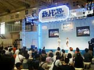
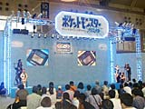
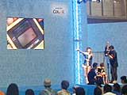
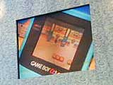

|  みんなが大好きなポケットモンスターことポケモン。今回のショーではついにポケモンの最新作が発表されました！ その名もズバリ『ポケットモンスタークリスタル（仮称）』。ポケットモンスタークリスタル（仮称）ステージでは、この『クリスタル』の情報の一部が公開されました。 |
|  ステージ上のスクリーンに登場したのは、ＣＭでもおなじみの「ポケモンおじさん」。ポケモンおじさんにより、会場のみんなに『クリスタル』のゲーム画面が紹介されます。戦闘中にポケモンたちがアクションして、とってもかわいい！ また、新しい女の子のキャラクターもイラストで紹介されました。さらに、とっておきの情報として、モバイルシステムＧＢを使ってポケモンを交換できることが明らかになりました。そこで早速、ステージ上でモバイルシステムＧＢを使った交換が試されることに。 |
|  ステージのお手伝いに立候補したのはかとうひろきくん（７歳）。ちょっとキンチョーしていたひろきくんだけど、お姉さんの指示に従ってテキパキボタン操作をして、みごとモバイルシステムＧＢを使ったポケモンの交換に成功。カモネギとフリーザーの交換が、ステージ上の大きなスクリーンに映し出されました。 |
 さらに、ステージ上にはポケモンおじさんから送られた大きなタマゴが登場。モバイルシステムＧＢを使えば「なぞのタマゴ」をゲットできることが発表されました。
この「なぞのタマゴ」からは、ピヨピヨパンチを覚えたピィなど普通とは違ったわざを覚えた君だけのポケモンが生まれてくるようです。
その他に色違いのピチューなんかも生まれてくるらしいので友達にきっと自慢できること請け合いです。はやくモバイルシステムGBを使って「なぞのタマゴ」、ゲットしてみたいですよね。
次々発表される新情報に、ステージ前に集まったみんなも息をのんでいた様子。お手伝いの立候補には大人のユーザーさんも「ハイ！」と元気よく手をあげたりして、とってもアットホームな雰囲気でした。
|